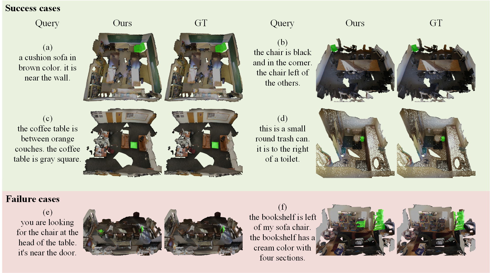

Qualitative Results

Ablation qualitative results

Referring 3D Segmentation is a visual-language task that segments all points of the specified object from a 3D point cloud described by a sentence of query. Previous works perform a two-stage paradigm, first conducting language-agnostic instance segmentation then matching with given text query. However, the semantic concepts from text query and visual cues are separately interacted during the training, and both instance and semantic labels for each object are required, which is time consuming and human-labor intensive. To mitigate these issues, we propose a novel Referring 3D Segmentation pipeline, Label-Efficient and Single-Stage, dubbed LESS, which is only under the supervision of efficient binary mask. Specifically, we design a Point-Word Cross-Modal Alignment module for aligning the fine-grained features of points and textual embedding. Query Mask Predictor module and Query-Sentence Alignment module are introduced for coarse-grained alignment between masks and query. Furthermore, we propose an area regularization loss, which coarsely reduces irrelevant background predictions on a large scale. Besides, a point-to-point contrastive loss is proposed concentrating on distinguishing points with subtly similar features. Through extensive experiments, we achieve state-of-the-art performance on ScanRefer dataset by surpassing the previous methods about 3.7% mIoU using only binary labels.
@inproceedings{liuless,
title={LESS: Label-Efficient and Single-Stage Referring 3D Segmentation},
author={Liu, Xuexun and Xu, Xiaoxu and Li, Jinlong and Zhang, Qiudan and Wang, Xu and Sebe, Nicu and Ma, Lin},
booktitle={The Thirty-eighth Annual Conference on Neural Information Processing Systems}
}